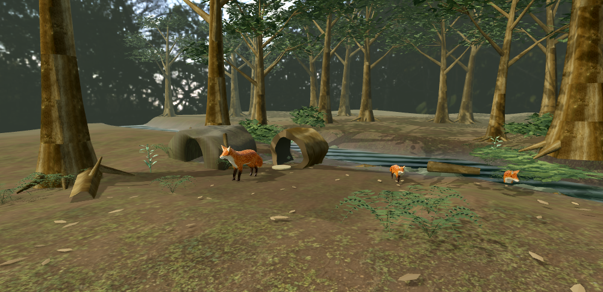

Wildlife · Exploration
Living woodland
Follow a fox through vegetation and water. Explore scent, cover and the changing woodland.
Follow the woodland trail →
A mountain port. A wild woodland. A meadow with a herd to bring home. Choose a world, explore its systems, then make it your own.
Enter a world directly. Play with its controls, open Edit world to change its settings, and save a draft to return to.
Follow a fox through vegetation and water. Explore scent, cover and the changing woodland.
Follow the woodland trail →Take control of a robot among equipment, practical lights and interactive machinery.
Enter the laboratory →Guide an alpaca and its followers across the pasture. Find the crossing and a route to shelter.
Meet the meadow herd →Explore a glasshouse of curved structures, practical lights and moving shadows.
Explore the conservatory →Find your way through a working harbor, with moving platforms, checkpoints and deliveries.
Take the coastal route →Explore a mountain port built across rising terraces. Balance work, supplies and a changing river.
Enter the mountain port →Real in-engine views of these playable worlds, captured from this build. Your view changes as you play.
Browse every world and focused study in the Studio. Each opens directly in your browser.
Every world is a place to test an idea. Use its controls to play, change its editable settings, then apply your changes and see what happens. Drafts save in your browser; no account is needed.
Read the exploration guide →These worlds explore shared capabilities across simulation, movement, environments and interaction. Each is a different starting point for building and authoring.
Compare Reference, Candidate, Reduced and Stress in the focused diorama, wildlife and laboratory settings.